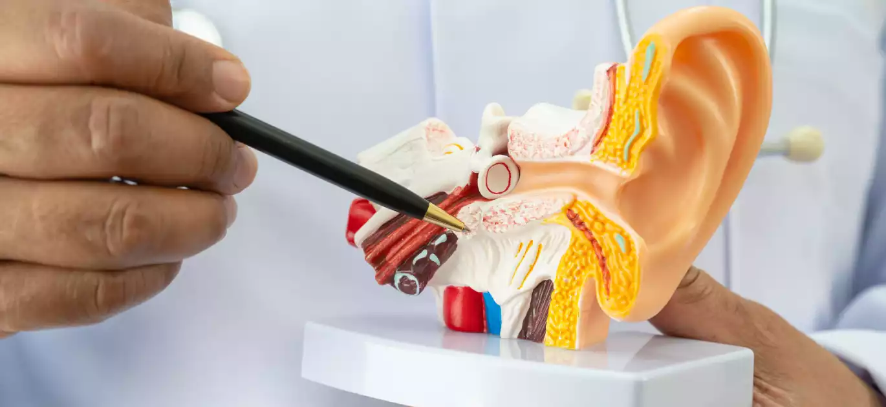
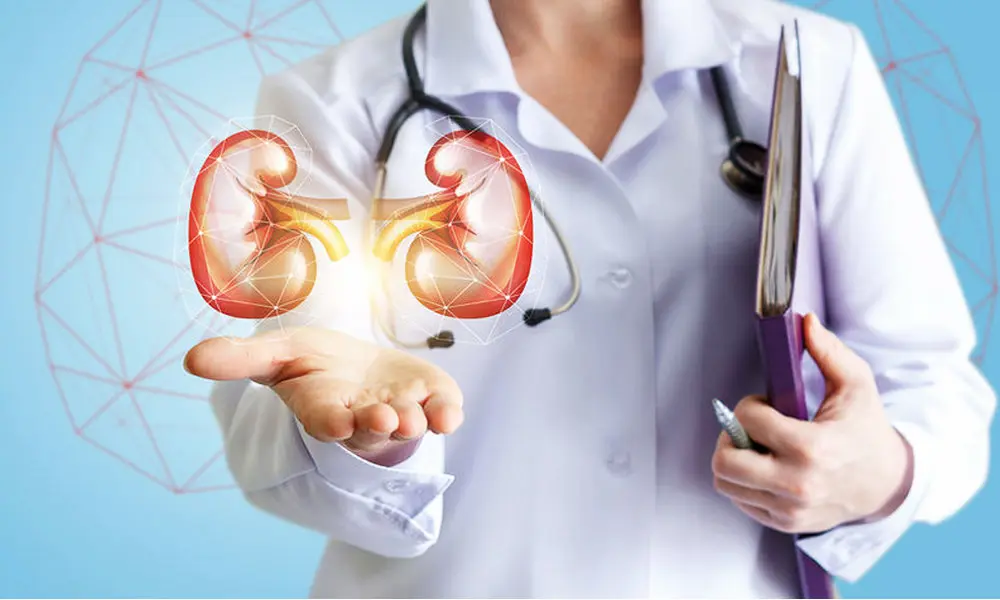
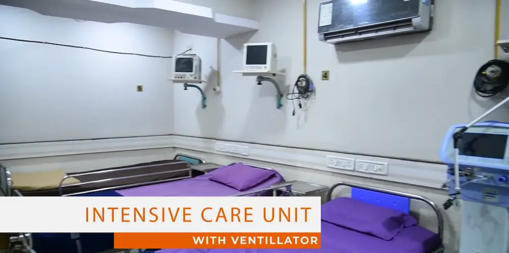
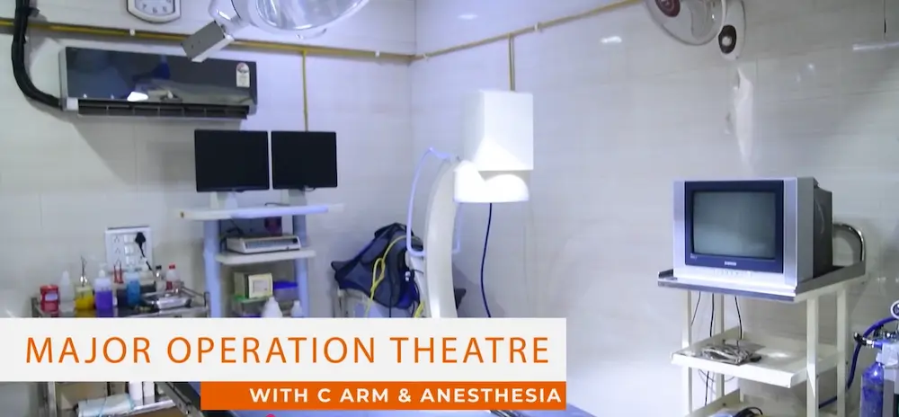
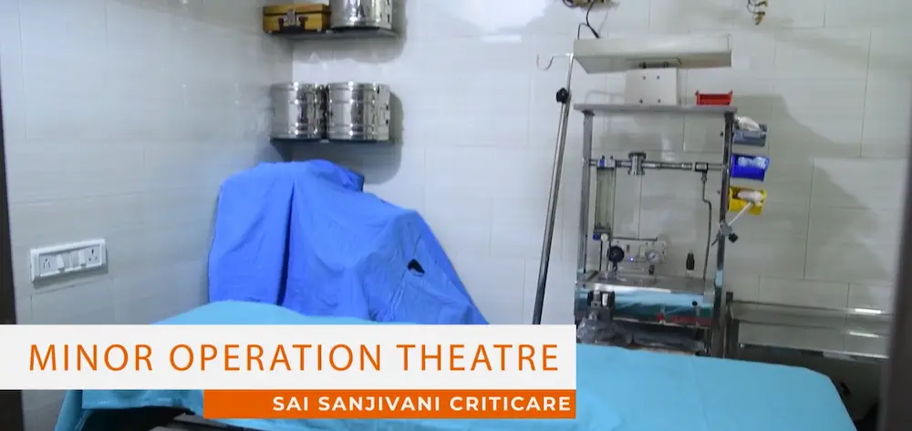
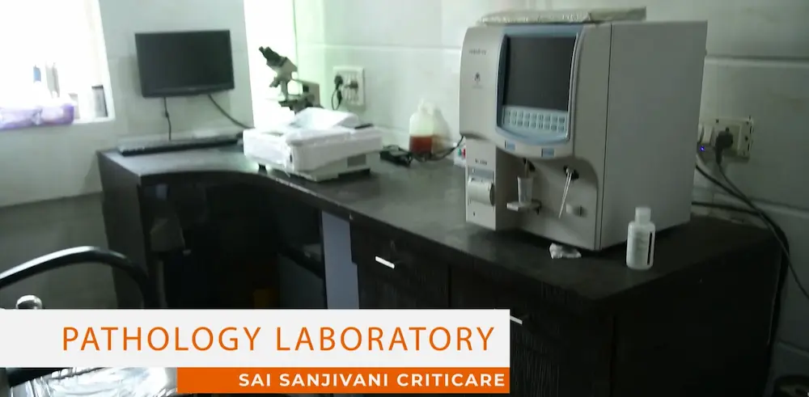

Comprehensive Healthcare for Every Need
At Sai Sanjivani Criticare Hospital, we offer a comprehensive range of medical specialties supported by experienced doctors, skilled nursing staff, and modern healthcare technology. Whether you require routine consultations, advanced treatment, emergency care, or specialized procedures, our team is committed to delivering safe, effective, and patient-centered healthcare at every stage of your journey.
General Consultation & Medicines
Expert general practitioner consultations and comprehensive medication management for all age groups.
Critical Care Medicine & ICU
24/7 intensive care with advanced monitoring and life support systems for critically ill patients.

Laparoscopic Surgery & General Surgery
Expert surgical care for a wide range of conditions, combining advanced techniques with a focus on patient safety and recovery.

Orthopedic Surgery & Joint Replacement
Expert joint replacements, complex fracture treatments, and advanced sports medicine interventions.

Neurosurgery & Spine Care
Highly advanced micro-neurosurgical procedures for brain tumors, spine reconstruction, and nerve trauma care.

Oncosurgery (Cancer Specialty)
Comprehensive oncological tumor resections and multi-disciplinary malignant growth treatment solutions.
Gynecology & Obstetrics
Comprehensive women's health including antenatal care, safe delivery, and gynecological treatments.
Pediatrics (Child Care)
Comprehensive pediatric care from newborn screening to adolescent medicine with specialized expertise.
Urology
Expert urological care including kidney stone management, prostate health, and urinary tract disorders.
Plastic Surgery
Reconstructive and cosmetic surgical procedures with emphasis on natural results and patient satisfaction.
Trauma & Emergency Care
24/7 emergency response for accidents, trauma, and acute medical emergencies with rapid stabilization.
Psychiatric & Mental Health
Comprehensive mental health support including counseling, therapy, and psychiatric treatment.
Physiotherapy & Rehab
Physical rehabilitation and recovery programs for post-surgical and post-injury recovery.

ENT Surgery
Ear, nose, and throat specialist care including hearing assessment and sinus treatments.

Nephrology (Kidney Care)
Specialized kidney care including dialysis management and treatment of renal disorders.
Ophthalmology (Eye Care)
Comprehensive eye care including cataract surgery, vision correction, and retinal care.
Advanced Medical Infrastructure
Infrastructure plays a crucial role in the effectiveness of healthcare delivery, especially in high-volume hospitals. Sai Sanjeevani Hospital is equipped with modern medical infrastructure designed to support complex clinical operations while maintaining patient comfort.
Infrastructure Highlights
- ✓ Well-equipped operation theaters
- ✓ Diagnostic laboratories for pathology and biochemistry
- ✓ Imaging facilities such as X-ray, ultrasound, CT, and MRI
- ✓ Intensive Care Units (ICU, NICU, CCU)
- ✓ Emergency and trauma care units
- ✓ Dedicated outpatient (OPD) and inpatient (IPD) facilities
The hospital's infrastructure supports efficient patient flow, faster diagnosis, and improved treatment outcomes.
Modern Facilities
State-of-the-art medical infrastructure designed for optimal patient care, precision diagnostics, and comfortable recovery.
Emergency & Critical Care Services
Emergency care is a defining responsibility of a Private / General & ICU hospital, and Sai Sanjeevani Hospital is well-prepared to respond to medical emergencies around the clock.
24/7 Rapid Response
Immediate, life-saving critical care available around the clock with a dedicated team of emergency specialists.
Emergency Services Offered
- • 24/7 emergency department
- • Trauma and accident care
- • Cardiac emergencies such as heart attacks
- • Stroke management
- • Rapid triage and stabilization
With trained emergency physicians and immediate access to diagnostic and surgical support, Sai Sanjeevani Hospital ensures timely intervention during critical situations.
Our Facilities
Take a glimpse of our medical facilities designed for patient comfort and optimal treatment outcomes.

Intensive Care Units (ICU)

Major Operation Theaters

Minor Operation Theaters
